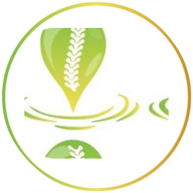

Mis proyectos Tab 3Algunos de los proyectos que desarrolle a lo largo de mi época
estudiantil son los siguientes (cada uno redirecciona a su respectivo repositorio en GitHub):

Sistema de gestión de citas en Centro de Terapias Alternativas Termo OasisFrontendSistema de gestión de farmacia